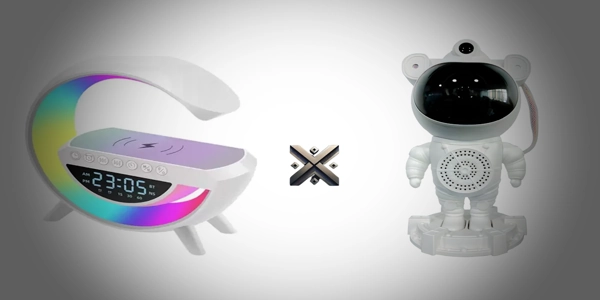

Em um mercado cada vez mais voltado para dispositivos multifuncionais e criativos, as caixas de som deixaram de ser apenas fontes de áudio. Hoje, elas também decoram, iluminam, despertam e até projetam estrelas no teto! Dois modelos que têm se destacado nas vendas e nas redes sociais são a G-Speaker e a Astronauta. qual dessas vale investir?
Neste artigo, vamos fazer um comparativo completo entre esses dois produtos, analisando, funcionalidades, qualidade sonora, custo-benefício e mais. Se você está em dúvida qual delas comprar, continue lendo e descubra qual caixa de som combina mais com o seu estilo.

O design da G-Speaker é moderno, elegante e discreto. Com acabamento em tons neutros e estrutura retangular compacta, ela se encaixa perfeitamente em mesas de cabeceira, escritórios e ambientes mais minimalistas. O display em LED mostra as horas, funcionando também como um relógio digital.
Ideal para: quem gosta de tecnologia com um toque clean e funcional.
Já a caixa Astronauta é pura criatividade! O design em forma de astronauta sentado, com o capacete funcionando como um projetor de estrelas, encanta adultos e crianças. É um item decorativo que chama atenção logo de cara e combina muito com quartos temáticos, ambientes geeks ou infantis.
Ideal para: quem busca um item decorativo único, com atmosfera lúdica e relaxante.
✅ Vencedor no quesito design: Empate, pois depende do gosto pessoal. O G-Speaker é mais discreto, enquanto o Astronauta é mais expressivo.
Tudo isso pode ser controlado facilmente pelos botões superiores. Além disso, conta com ajuste de brilho no visor, garantindo conforto visual durante a noite.
Aqui, a experiência é mais sensorial: o som se mistura com projeções de luzes que criam uma atmosfera relaxante e mágica.
✅ Vencedor em funcionalidades: Astronauta Star Light, por trazer a combinação entre som e efeitos visuais com controle remoto.
Possui um som claro e estável, com boa potência para ambientes pequenos e médios. É ótimo para ouvir playlists suaves, podcasts ou usar como despertador com som personalizado.
Apesar do design decorativo, o som surpreende. O volume é razoavelmente alto e não distorce em volumes médios. O foco é mais em criar uma experiência sensorial completa.
✅ Destaque em áudio: o G-Speaker, se sobressai pelo som limpo e equilibrado no uso diário.
A luminária LED é funcional e prática. Pode ser usada como luz de leitura, luz noturna ou apenas como decoração discreta no quarto. O brilho é ajustável.
O projetor preenche o teto e as paredes com estrelas em movimento, galáxias e auroras boreais. Perfeito para relaxar, pegar no sono ou dar um toque mágico ao ambiente.
✅ Campeão em iluminação: Astronauta Star Light, com um espetáculo de luzes cativante e exclusivo.
✅ Vencedor em praticidade: G-Speaker, por ser direto, funcional e compacto.
Ambos os modelos custam entre R$129 a R$136, dependendo da loja. O essencial é analisar o que cada opção oferece em relação ao custo:
✅ Vencedor no custo-benefício: depende do uso. Para rotina, G-Speaker; para experiência visual, Astronauta.
| Público | G-Speaker Smart Station | Astronauta Star Light |
|---|---|---|
| Jovens e adultos | ✅ Ideal para escritório e rotina | ✅ Ótimo para quarto e relaxamento |
| Adolescentes | ✅ Moderno e útil | ✅ Super atrativo visualmente |
| Crianças | ⚠️ Pouco lúdico | ✅ Excelente como luz noturna |
| Decoração neutra | ✅ Combina bem | ⚠️ Pode destoar |
| Ambientes criativos | ⚠️ Muito básico | ✅ Inspira criatividade |
A escolha entre a G-Speaker e a Caixa Astronauta Star Light vai depender do seu objetivo com o produto.
Se você procura uma caixa de som funcional, que também acorde você, ilumine o ambiente e tenha um design clean, o G-Speaker é a escolha certa.
Mas se o seu foco é uma experiência visual diferenciada, com projeções de estrelas, efeitos relaxantes e um visual encantador, a Astronauta Star Light vai te surpreender.
Ambas têm seus pontos fortes e podem ser até complementares no mesmo ambiente!
Você encontra essas duas caixas de som incríveis na Store Alexandre Games, com envio rápido e garantia de qualidade:
Aproveite nossas promoções e escolha a caixa de som que mais combina com seu estilo!